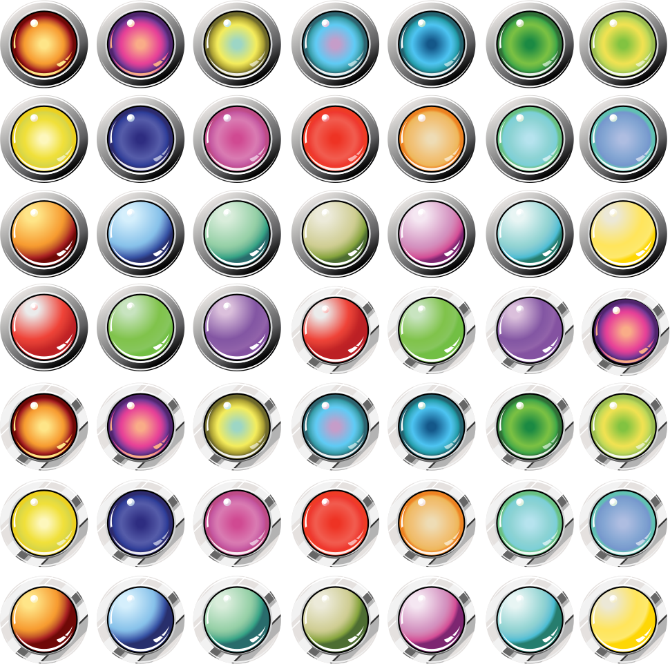

Кадзуха - анемо персонаж в Genshin Impact. Ронін-самурай з Інадзуми, який знайшов притулок на флоті Південного хреста в Лі Юе. Цей добрий і безтурботний хлопчина багато пережив у минулому.
Мандрівний самурай з Інадзуми, скромний і м'який. За молодою і безтурботною зовнішністю ховається повне минуле негараздів. На перший погляд безтурботний юнак строго слідкує власному кодексу поведінки.
Кадзуха живе в мандрах, днем долаючи шлях, а вночі засинаючи на землі під ковдрою з неба і зірок.
Його не приваблюють ні багатство, ні слава. Для нього важливо тільки жити в гармонії зі світом.
Хоч він і часто ночує під відкритим небом, будь то літо чи зима, негода його зовсім не турбує. Та й дощ з вітром немов уникають його і завжди обходять стороною.
На питання про таланти Кадзуха відповідає чесно: слухати вітер і спостерігати за хмарами.
Мало хто звертає увагу на дрібні зміни погоди, тому знаки природи часто залишаються незрозумілими.
Але Кадзухе з його вмінням досить лише відчути подих вітру або вирости вологості, щоб зрозуміти: слід шукати притулок.
Обійшов півсвіту Кадзуха уникнув незліченну кількість злив і снігопадів. Але на цей раз його чекає небачена гроза, йти від якої він не стане.
У доленосній зустрічі зійдуться дощ, блискавка і він.
«... А десь далеко лунає ледь чутний гуркіт грому. Навіть якщо дощу не буде, я залишуся тут ».



Mauris mauris ante, blandit et, ultrices a, suscipit eget, quam. Integer ut neque. Vivamus nisi metus, molestie vel, gravida in, condimentum sit amet, nunc. Nam a nibh. Donec suscipit eros. Nam mi. Proin viverra leo ut odio. Curabitur malesuada. Vestibulum a velit eu ante scelerisque vulputate.
Sed non urna. Donec et ante. Phasellus eu ligula. Vestibulum sit amet purus. Vivamus hendrerit, dolor at aliquet laoreet, mauris turpis porttitor velit, faucibus interdum tellus libero ac justo. Vivamus non quam. In suscipit faucibus urna.
Nam enim risus, molestie et, porta ac, aliquam ac, risus. Quisque lobortis. Phasellus pellentesque purus in massa. Aenean in pede. Phasellus ac libero ac tellus pellentesque semper. Sed ac felis. Sed commodo, magna quis lacinia ornare, quam ante aliquam nisi, eu iaculis leo purus venenatis dui.
Cras dictum. Pellentesque habitant morbi tristique senectus et netus et malesuada fames ac turpis egestas. Vestibulum ante ipsum primis in faucibus orci luctus et ultrices posuere cubilia Curae; Aenean lacinia mauris vel est.
Suspendisse eu nisl. Nullam ut libero. Integer dignissim consequat lectus. Class aptent taciti sociosqu ad litora torquent per conubia nostra, per inceptos himenaeos.
Оберіть дату: